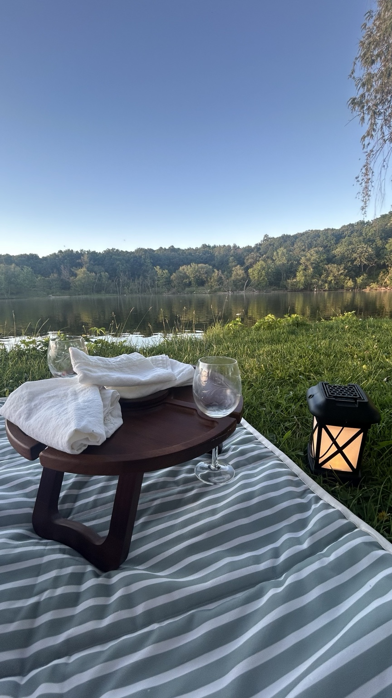

Sometimes the best adventures happen when there isn't much of a plan.

Not every outing has to be packed with activities. Some of our favorite days are spent finding a quiet picnic spot, enjoying lunch outside, wandering through a garden, or strolling around a charming downtown. These are the places that invite you to slow down and enjoy the little moments together.
Whether you have an hour or an entire afternoon, these destinations make it easy to relax, recharge, and appreciate everything Wisconsin has to offer.
Governor Dodge isn't just a great place to hike—it's also one of our favorite places to spend an afternoon. Bring a picnic, relax near the lake, and enjoy an easy walk whenever you're ready.
Spend the afternoon browsing local shops, stopping for coffee, and enjoying an easy walk along the lakefront. It's the perfect destination when you're looking for a slower pace.
Beautiful flowers, peaceful walking paths, and carefully maintained gardens make this a relaxing place to spend an afternoon. Before visiting, be sure to check the current pet policy.

Looking for more relaxing destinations? Visit Travel Wisconsin for parks, gardens, scenic drives, and small-town inspiration.